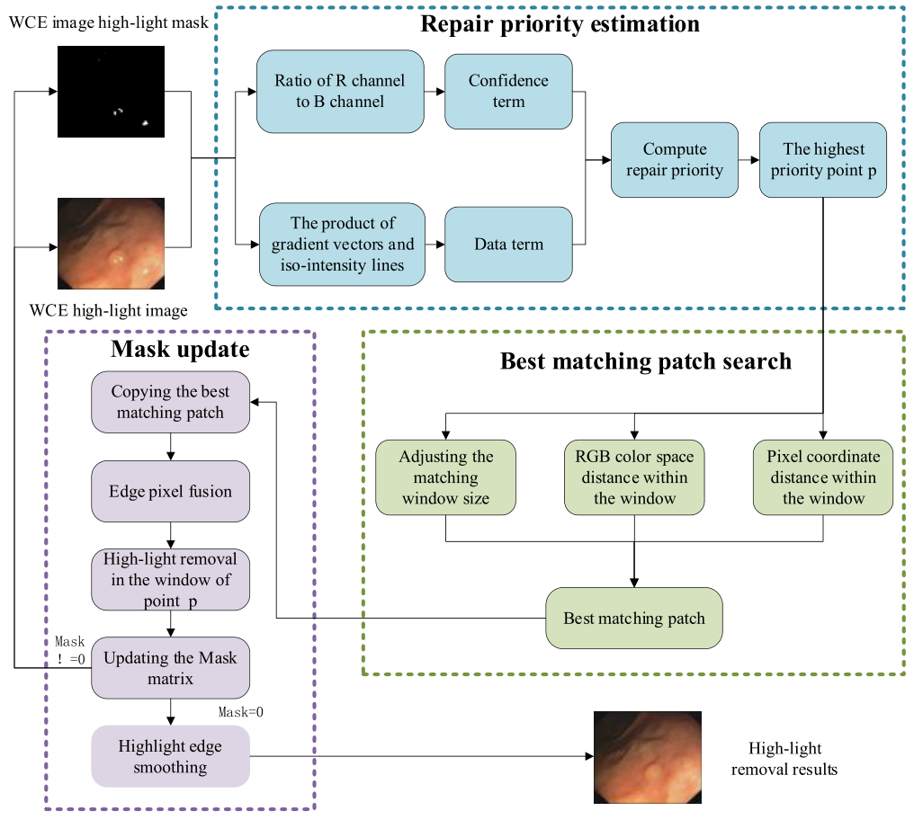

进行中
MixDeblur-GS: 面向混合模糊的动态高斯重建与去模糊
将混合模糊分解为全局相机模糊与局部物体模糊，构建统一的动态 3DGS 去模糊框架。结合深度与相机信息感知的逐像素模糊核和曝光时间内的多时刻渲染，按“空间响应—时间积分”顺序融合。 在三个数据集上验证，在去模糊与新视角合成任务中达到 SOTA 水平。
人工智能 · 计算机视觉
你好，Hello!
我是王喻恺，目前在曼彻斯特大学攻读人工智能理学硕士。我的研究聚焦于计算机视觉、三维几何感知与动态重建、医学影像与医疗 AI 的临床转化。
我的研究旨在提升视觉感知的可靠性，并推动医疗 AI 的实际应用。在王映辉教授指导下，我正在开发 MixDeblur-GS，从混合模糊中恢复清晰的动态场景，在三个数据集的去模糊与新视角合成任务中达到 SOTA 水平。在 Mikel Luján 教授指导下，我开发了 GS-Bench，从轨迹、几何、渲染与效率等维度比较 SLAM 系统，完成六种方法、三个数据集的评测。与 Claudia Lindner合作，我梳理了衔接医疗 AI 验证与临床应用的转化证据。
此前，我获得了江南大学人工智能工学学士学位。研究成果包括面向大视角图像特征提取的 LV-FeatEx，以及合作完成的胶囊内窥镜图像增强与高光去除研究，以提升组织细节的可见性。
我目前正在寻找上述研究方向的 PhD 机会，欢迎有意向的导师邮件联系。
在曼彻斯特大学开始 GS-Bench 研究，导师为 Mikel Luján 教授。
参与 Claudia Lindner 的医疗 AI 评估与临床转化研究。
开始在曼彻斯特大学攻读人工智能硕士。
毕业于江南大学，获人工智能工学学士学位。
加入无锡国家超级计算中心，担任人工智能工程师实习生。
加入浪潮集团，担任数据治理工程师实习生。
将混合模糊分解为全局相机模糊与局部物体模糊，构建统一的动态 3DGS 去模糊框架。结合深度与相机信息感知的逐像素模糊核和曝光时间内的多时刻渲染，按“空间响应—时间积分”顺序融合。 在三个数据集上验证，在去模糊与新视角合成任务中达到 SOTA 水平。
从轨迹、几何、渲染质量与效率等维度评估 Gaussian-Splatting SLAM。
研究医疗 AI 验证与真实临床应用之间的证据衔接。


 原图本文方法
原图本文方法